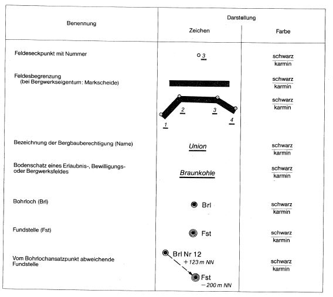

UnterlagenBergV
Ausfertigungsdatum: 11.11.1982
Vollzitat:
"Unterlagen-Bergverordnung vom 11. November 1982 (BGBl. I S. 1553), die zuletzt durch Artikel 4 der Verordnung vom 10. August 2005 (BGBl. I S. 2452) geändert worden ist"
| Stand: | Zuletzt geändert durch Art. 4 V v. 10.8.2005 I 2452 |
(+++ Textnachweis ab: 1.1.1983 +++)Diese V wurde als Artikel 1 V v. 11.11.1982 I 1553 auf Grund des § 67 Nr. 1, 4 und 8 und des § 68 Abs. 2 Nr. 1 u. 2 u. Abs. 3, auch iVm § 126 Abs. 1 Satz 1 u. Abs. 3 § 127 Abs. 1, §§ 128, 129 Abs. 1 und § 133 Abs. 3 d. BBergG v. 13.8.1980 I 1310 vom Bundesminister für Wirtschaft, für den Bereich des Festlandsockels und der Küstengewässer im Einvernehmen mit dem Bundesminister für Verkehr sowie auf Grund des § 67 Nr. 1 u. 7, des § 68 Abs. 2 Nr. 1 u. Abs. 3 u. des § 129 Abs. 2 d. BBergG vom Bundesminister für Wirtschaft mit Zustimmung des Bundesrates erlassen. Sie ist gem. Art. 4 V v. 11.11.1982 I 1553 mWv 1.1.1983 in Kraft getreten.
(+++ Amtliche Hinweise des Normgebers auf EG-Recht:
Umsetzung der
EGRL 63/95 (CELEX Nr: 395L0063)
EGRL 11/97 (CELEX Nr: 397L0011) vgl. V v. 10.8.1998 I 2093 +++)
(+++ Die V ist im Beitrittsgebiet gem. EinigVtr Anlage I Kap. V Sachgeb. D
Abschn. III Nr. 2 am 1.1.1994 in Kraft getreten; vgl. auch Art. 1 Nr. 4
Buchst. d DBuchst. bb G v. 21.1.2013 I 91 +++)
|  |